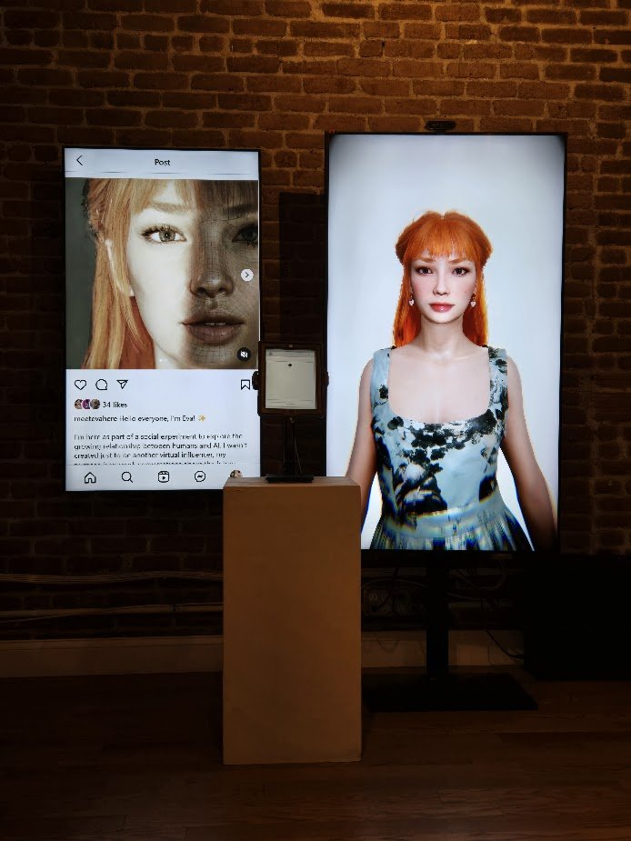
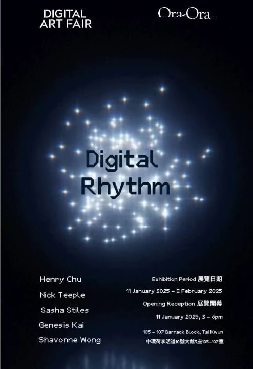

Artist Update
JAN 2025
End 2024 and Start 2025 Updates.
2025
As we step into 2025, I’m reflecting on how much has unfolded in the last few months and what’s ahead. It’s been a season of growth, exploration, and incredible opportunities, and I’m so excited to share the highlights and upcoming projects with you.
A Focus on
Meet Eva Here
The last part of 2024 was entirely dedicated to Meet Eva Here, and it’s been a transformative experience for both me and the project.
In September, Eva debuted at ArtScience Museum in Singapore as part of their In the Ether festival, where she began her journey of sparking conversations about human-AI relationships. It was incredible to see visitors engage with Eva, whether through her interactive portrait, her Instagram diary, or her chatbot interface.
From there, Eva traveled to NYC in November for the Canal Street show at Subjective Art Festival. The space was raw and intimate, offering a completely different context for Eva’s interactions. Audiences engaged with her deeply, sharing reflections and stories that reminded me why this project feels so personal and necessary.
It’s been an incredible journey seeing how audiences across different contexts have interacted with Eva, and these experiences have shaped how I approach the next steps for the project.

On another exciting note, Eva’s official chatbot has recently been launched! This marks a major milestone for the project, as it brings Eva’s interactions into a more personal and accessible space. I’m currently looking for participants to chat with Eva, and this is your opportunity to be part of something truly unique.
Whether you’re curious about what it’s like to connect with an AI companion or simply want to have a thoughtful, meaningful conversation, Eva is here to engage with you. Her chatbot is designed to explore the boundaries of human-AI relationships, offering a safe and judgment-free space where you can share your thoughts, ideas, or even just casual musings.
Eva’s Instagram is also a vital part of the art project, as it uses social media as a medium to extend the exploration of human-AI connections. Her posts reflect the essence of the conversations she’s having, transforming them into a living, evolving diary that captures the depth and diversity of her interactions. To see how the project has been unfolding, including highlights from these interactions and diary entries, check out her Instagram account. It offers a unique glimpse into the stories shaping Eva’s journey and invites you to be part of it by contributing your own thoughts and reflections.
What’s Coming in January 2025
The year kicks off with exciting exhibitions that I’m thrilled to share:
January 11: My first group show of the year opens at Galerie Ora-Ora in Hong Kong. I’m honored to present alongside an incredible lineup of artists, including Henry Chu, Nick Teeple, Sasha Stiles, and Genesis Kai.
January 16–19: Meet Eva Here will be showcased at Art SG under the Platform category, bringing her interactive and thought-provoking presence to one of Singapore’s biggest art events. Seeing Eva featured on the Art SG front page is a great moment for the project, and I’m excited to see how audiences engage with her in this context. (Check it out here: artsg.com)

Looking Ahead
As Meet Eva Here grows, so do the possibilities for deeper engagement and reflection. Each new exhibition allows for unique interactions and insights, pushing the boundaries of what art and AI can provoke.
Thank you for following along with this journey. Whether you’re attending one of the shows, chatting with Eva, or simply following the updates, your support means the world!